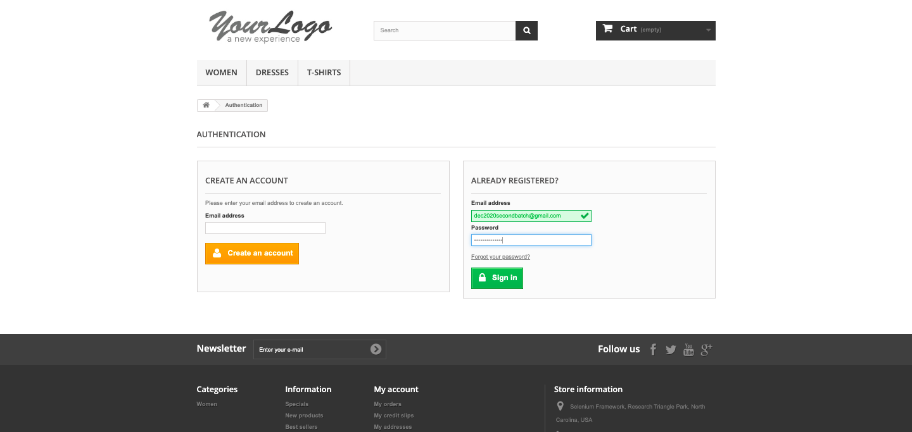
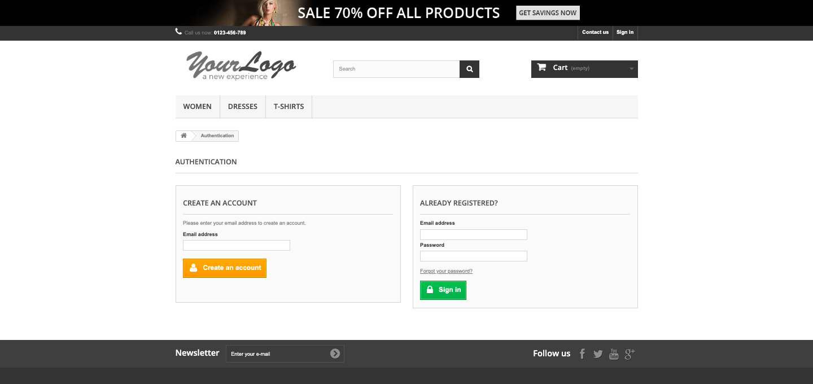
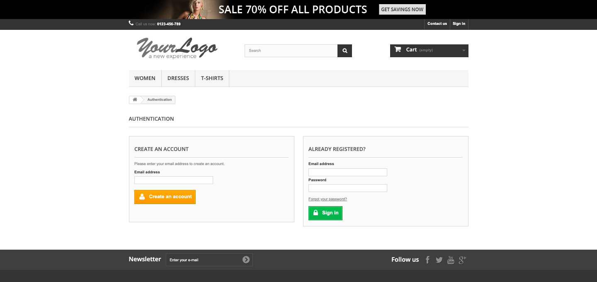

Started
Jun 13, 2022 01:08:44 am
Ended
Jun 13, 2022 01:09:35 am
Features Passed
0
Features Failed
3
Features
Scenarios
Steps
Timeline
Tags
| Name | Passed | Failed | Skipped | Others | Passed % |
|---|---|---|---|---|---|
| @accounts | 0 | 4 | 0 | 0 | 0% |
System/Environment
| Name | Value |
|---|---|
| AppName | AutomationPractice |
| user | Anil |
| build | 1.1 |
-
Account Page Feature
01:08:46 am / 00:00:49:536 Fail
Account Page Feature
06.13.2022 01:08:46 06.13.2022 01:09:35 00:00:49:536 · #test-id=1FailAccounts page titleGiven user has already logged in to applicationusername password dec2020secondbatch@gmail.com Selenium@12345 Given user is on Accounts pageStep skippedWhen user gets the title of the pageStep skippedThen page title should be "My account - My Store"Step skippedAppHooks.ApplicationHooks.tearDown(io.cucumber.java.Scenario)Accounts_page_title 13_06_2022 01:09:19FailAccounts section countGiven user has already logged in to applicationusername password dec2020secondbatch@gmail.com Selenium@12345 Given user is on Accounts pageStep skippedThen user gets accounts sectionORDER HISTORY AND DETAILS MY CREDIT SLIPS MY ADDRESSES MY PERSONAL INFORMATION MY WISHLISTS Home Step skippedAnd accounts section count should be 6Step skippedAppHooks.ApplicationHooks.tearDown(io.cucumber.java.Scenario)Accounts_section_count 13_06_2022 01:09:20FailAccounts page titleGiven user has already logged in to applicationusername password dec2020secondbatch@gmail.com Selenium@12345 Given user is on Accounts pageStep skippedWhen user gets the title of the pageStep skippedThen page title should be "My account - My Store"Step skippedAppHooks.ApplicationHooks.tearDown(io.cucumber.java.Scenario)Accounts_page_title 13_06_2022 01:09:34FailAccounts section countGiven user has already logged in to applicationusername password dec2020secondbatch@gmail.com Selenium@12345 Given user is on Accounts pageStep skippedThen user gets accounts sectionORDER HISTORY AND DETAILS MY CREDIT SLIPS MY ADDRESSES MY PERSONAL INFORMATION MY WISHLISTS Home Step skippedAnd accounts section count should be 6Step skippedAppHooks.ApplicationHooks.tearDown(io.cucumber.java.Scenario)Accounts_section_count 13_06_2022 01:09:35 -
Contact Us Feature
01:08:46 am / 00:00:34:717 Fail
Contact Us Feature
06.13.2022 01:08:46 06.13.2022 01:09:20 00:00:34:717 · #test-id=4FailContact Us scenario with different set of dataFailContact Us scenario with different set of dataGiven user navigates to contact us pageWhen user fills the form from given sheetname "contactus" and rownumber 3And user clicks on send buttonStep skippedThen it shows a successful message "Your message has been successfully sent to our team."Step skippedAppHooks.ApplicationHooks.tearDown(io.cucumber.java.Scenario)Contact_Us_scenario_with_different_set_of_data 13_06_2022 01:09:18 FailContact Us scenario with different set of dataGiven user navigates to contact us pageWhen user fills the form from given sheetname "contactus" and rownumber 5And user clicks on send buttonStep skippedThen it shows a successful message "Your message has been successfully sent to our team."Step skippedAppHooks.ApplicationHooks.tearDown(io.cucumber.java.Scenario)Contact_Us_scenario_with_different_set_of_data 13_06_2022 01:09:18
FailContact Us scenario with different set of dataGiven user navigates to contact us pageWhen user fills the form from given sheetname "contactus" and rownumber 5And user clicks on send buttonStep skippedThen it shows a successful message "Your message has been successfully sent to our team."Step skippedAppHooks.ApplicationHooks.tearDown(io.cucumber.java.Scenario)Contact_Us_scenario_with_different_set_of_data 13_06_2022 01:09:18 FailContact Us scenario with different set of dataGiven user navigates to contact us pageWhen user fills the form from given sheetname "contactus" and rownumber 1And user clicks on send buttonStep skippedThen it shows a successful message "Your message has been successfully sent to our team."Step skippedAppHooks.ApplicationHooks.tearDown(io.cucumber.java.Scenario)Contact_Us_scenario_with_different_set_of_data 13_06_2022 01:09:18
FailContact Us scenario with different set of dataGiven user navigates to contact us pageWhen user fills the form from given sheetname "contactus" and rownumber 1And user clicks on send buttonStep skippedThen it shows a successful message "Your message has been successfully sent to our team."Step skippedAppHooks.ApplicationHooks.tearDown(io.cucumber.java.Scenario)Contact_Us_scenario_with_different_set_of_data 13_06_2022 01:09:18 FailContact Us scenario with different set of dataGiven user navigates to contact us pageWhen user fills the form from given sheetname "contactus" and rownumber 0And user clicks on send buttonStep skippedThen it shows a successful message "Your message has been successfully sent to our team."Step skippedAppHooks.ApplicationHooks.tearDown(io.cucumber.java.Scenario)Contact_Us_scenario_with_different_set_of_data 13_06_2022 01:09:18
FailContact Us scenario with different set of dataGiven user navigates to contact us pageWhen user fills the form from given sheetname "contactus" and rownumber 0And user clicks on send buttonStep skippedThen it shows a successful message "Your message has been successfully sent to our team."Step skippedAppHooks.ApplicationHooks.tearDown(io.cucumber.java.Scenario)Contact_Us_scenario_with_different_set_of_data 13_06_2022 01:09:18 FailContact Us scenario with different set of dataGiven user navigates to contact us pageWhen user fills the form from given sheetname "contactus" and rownumber 4And user clicks on send buttonStep skippedThen it shows a successful message "Your message has been successfully sent to our team."Step skippedAppHooks.ApplicationHooks.tearDown(io.cucumber.java.Scenario)Contact_Us_scenario_with_different_set_of_data 13_06_2022 01:09:18FailContact Us scenario with different set of dataGiven user navigates to contact us pageWhen user fills the form from given sheetname "contactus" and rownumber 2And user clicks on send buttonStep skippedThen it shows a successful message "Your message has been successfully sent to our team."Step skippedAppHooks.ApplicationHooks.tearDown(io.cucumber.java.Scenario)Contact_Us_scenario_with_different_set_of_data 13_06_2022 01:09:18
FailContact Us scenario with different set of dataGiven user navigates to contact us pageWhen user fills the form from given sheetname "contactus" and rownumber 4And user clicks on send buttonStep skippedThen it shows a successful message "Your message has been successfully sent to our team."Step skippedAppHooks.ApplicationHooks.tearDown(io.cucumber.java.Scenario)Contact_Us_scenario_with_different_set_of_data 13_06_2022 01:09:18FailContact Us scenario with different set of dataGiven user navigates to contact us pageWhen user fills the form from given sheetname "contactus" and rownumber 2And user clicks on send buttonStep skippedThen it shows a successful message "Your message has been successfully sent to our team."Step skippedAppHooks.ApplicationHooks.tearDown(io.cucumber.java.Scenario)Contact_Us_scenario_with_different_set_of_data 13_06_2022 01:09:18
-
Login page feature
01:08:46 am / 00:00:49:520 Fail
Login page feature
06.13.2022 01:08:46 06.13.2022 01:09:35 00:00:49:520 · #test-id=25PassLogin page titleGiven user is on login pageWhen user gets the title of the pageThen page title should be "Login - My Store"AppHooks.ApplicationHooks.tearDown(io.cucumber.java.Scenario)Login_page_title 13_06_2022 01:09:17PassForgot Password linkGiven user is on login pageThen forgot your password link should be displayedAppHooks.ApplicationHooks.tearDown(io.cucumber.java.Scenario)Forgot_Password_link 13_06_2022 01:09:17 FailLogin with correct credentialsGiven user is on login pageWhen user enters username "moreanil633@gmail.com"And user enters password "Anil@1993"And user clicks on Login buttonThen user gets the title of the pageStep skippedAnd page title should be "My account - My Store"Step skippedAppHooks.ApplicationHooks.tearDown(io.cucumber.java.Scenario)Login_with_correct_credentials 13_06_2022 01:09:35
FailLogin with correct credentialsGiven user is on login pageWhen user enters username "moreanil633@gmail.com"And user enters password "Anil@1993"And user clicks on Login buttonThen user gets the title of the pageStep skippedAnd page title should be "My account - My Store"Step skippedAppHooks.ApplicationHooks.tearDown(io.cucumber.java.Scenario)Login_with_correct_credentials 13_06_2022 01:09:35
-
@accounts
4 tests
@accounts
4 failedStatus Timestamp TestName Fail 01:08:46 am Accounts page title Account Page Feature.Accounts page titleFail 01:08:46 am Accounts section count Account Page Feature.Accounts section countFail 01:09:19 am Accounts page title Account Page Feature.Accounts page titleFail 01:09:20 am Accounts section count Account Page Feature.Accounts section count
-
org.openqa.selenium.ElementClickInterceptedException
1 tests
org.openqa.selenium.ElementClickInterceptedException
1 failedStatus Timestamp TestName Fail 01:09:16 am Given user has already logged in to application Account Page Feature.Accounts page title.Given user has already logged in to applicationFail 01:09:16 am Given user has already logged in to application Account Page Feature.Accounts section count.Given user has already logged in to applicationFail 01:09:32 am Given user has already logged in to application Account Page Feature.Accounts page title.Given user has already logged in to applicationFail 01:09:33 am Given user has already logged in to application Account Page Feature.Accounts section count.Given user has already logged in to applicationFail 01:09:33 am And user clicks on Login button Login page feature.Login with correct credentials.And user clicks on Login button -
org.openqa.selenium.NoSuchElementException
1 tests
org.openqa.selenium.NoSuchElementException
1 failedStatus Timestamp TestName Fail 01:09:16 am When user fills the form from given sheetname "contactus" and rownumber 1 Contact Us Feature.Contact Us scenario with different set of data.When user fills the form from given sheetname "contactus" and rownumber 1Fail 01:09:16 am When user fills the form from given sheetname "contactus" and rownumber 0 Contact Us Feature.Contact Us scenario with different set of data.When user fills the form from given sheetname "contactus" and rownumber 0Fail 01:09:16 am When user fills the form from given sheetname "contactus" and rownumber 5 Contact Us Feature.Contact Us scenario with different set of data.When user fills the form from given sheetname "contactus" and rownumber 5Fail 01:09:15 am When user fills the form from given sheetname "contactus" and rownumber 3 Contact Us Feature.Contact Us scenario with different set of data.When user fills the form from given sheetname "contactus" and rownumber 3Fail 01:09:16 am When user fills the form from given sheetname "contactus" and rownumber 4 Contact Us Feature.Contact Us scenario with different set of data.When user fills the form from given sheetname "contactus" and rownumber 4Fail 01:09:16 am When user fills the form from given sheetname "contactus" and rownumber 2 Contact Us Feature.Contact Us scenario with different set of data.When user fills the form from given sheetname "contactus" and rownumber 2